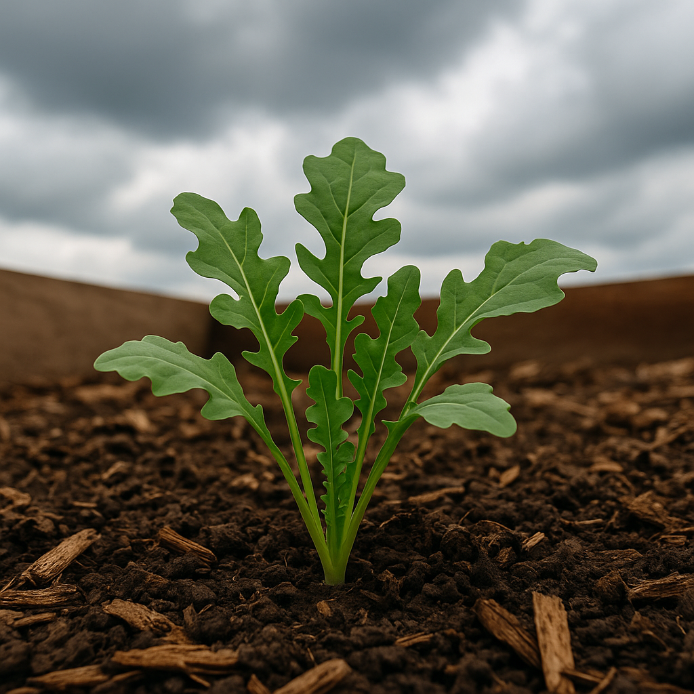
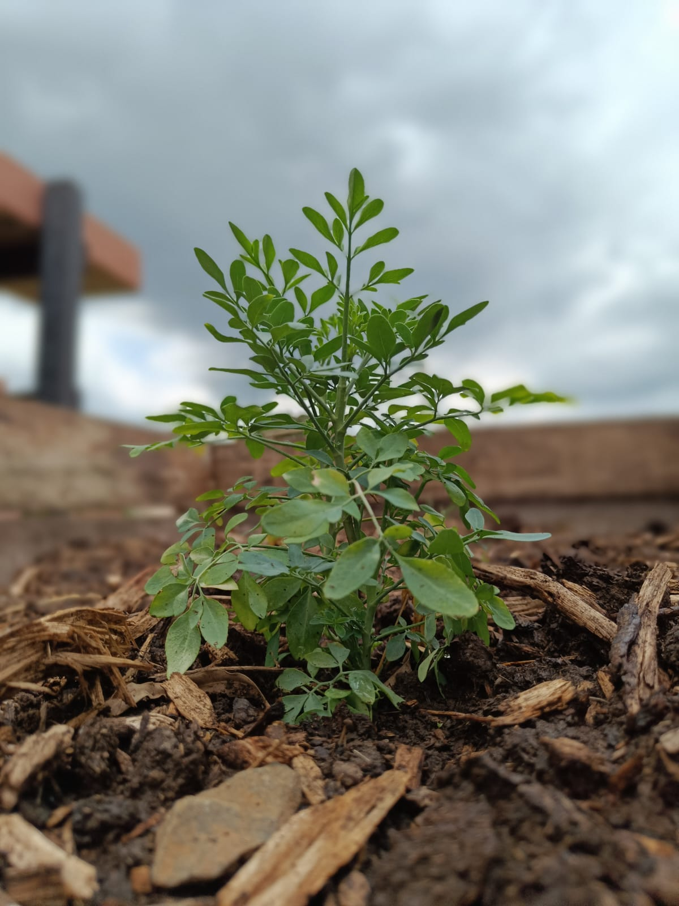

2º Canteiro
Rúcula

Nome científico: Eruca vesicaria
Descrição da planta: Folhas verdes escuras, recortadas e com sabor picante. Cresce rapidamente e é ideal para saladas.
Data do plantio: 29/10/2025
Adubação usada: Esterco
Utilização: Consumida crua em saladas, sanduíches e pizzas, ou refogada. Rica em vitaminas e minerais.
Curiosidade: Conhecida desde o Império Romano, era considerada um afrodisíaco.
Arruda

Nome científico: Ruta graveolens
Descrição da planta: Arbusto perene com folhas verdes-acinzentadas, aromáticas e divididas; caule rígido e pequenas flores amarelas.
Data do plantio: 26/10/2025
Adubação usada: Esterco
Utilização: Usada em rituais de proteção e limpeza energética; em chás e medicina popular por suas propriedades digestivas e anti-inflamatórias.
Curiosidade: Considerada planta de proteção espiritual, acredita-se que afasta energias negativas e traz boa sorte.
Cebolinha

Nome científico: Allium fistulosum
Descrição da planta: Planta de folhas finas, ocas e verdes, com sabor e aroma suaves parecidos com o da cebola; cresce em touceiras e permite várias colheitas.
Data do plantio: 28/10/2025
Adubação usada: Esterco
Utilização: Usada como tempero em sopas, omeletes, saladas, molhos e refogados.
Curiosidade: Rica em vitaminas A e C, tem ação antioxidante e pode ser colhida várias vezes sem arrancar a planta.